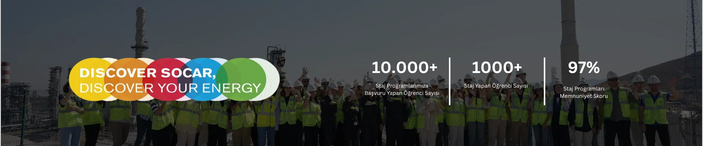
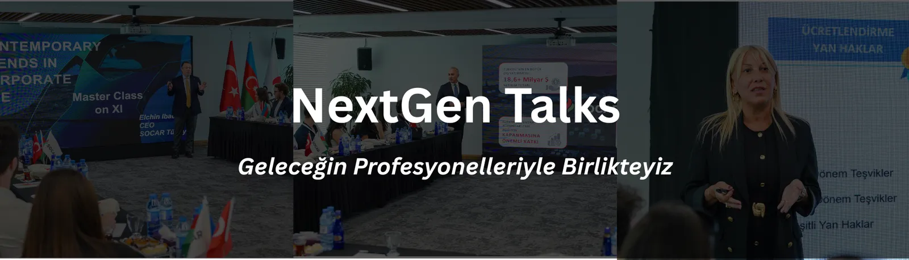

Genç Yetenekler — Geleceğin Enerjisi Sizsiniz

Geleceğin Enerjisi Sizsiniz!
SOCAR Türkiye olarak, genç yeteneklerin gelişimine yatırım yapıyor; onları gerçek iş deneyimiyle buluşturarak geleceğe hazırlıyoruz.
Her yıl Mart–Nisan aylarında staj başvurularını alıyor; Temmuz ve Ağustos aylarında iki ayrı dönemde stajyerlerimizi ağırlıyoruz.
İstanbul, İzmir ve Ankara lokasyonlarımızda teknik ve idari alanlarda staj imkânı sunuyor; genç yetenekleri iş dünyasına güçlü bir başlangıç yapmaları için destekliyoruz.
Başvuru Yap

Next Gen Talks — Üniversite Kariyer Söyleşileri

Next Gen Talks
SOCAR Türkiye olarak, genç yeteneklerle bir araya geldiğimiz Next Gen Talks serisiyle üniversite öğrencilerinin kariyer yolculuklarına ilham veriyoruz.
Türkiye'nin önde gelen üniversitelerinde okuyan öğrencilerle gerçekleştirdiğimiz bu etkinliklerde, farklı iş birimlerimizden yöneticilerimiz; deneyimlerini, sektör içgörülerini ve kariyer ipuçlarını paylaşırken, öğrenciler de şirketimizin çalışma ortamı, kurumsal kültürü ve faaliyet alanları hakkında doğrudan bilgi edinme fırsatı buluyor.
Gençlerle birebir temas kurduğumuz bu sohbet serisi, yalnızca bilgi aktarmakla kalmıyor; aynı zamanda onların beklenti ve bakış açılarını da daha yakından tanımamıza olanak tanıyor.
Etkinliklere Katıl